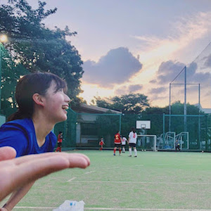
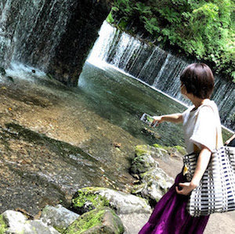
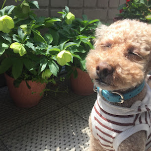

<!DOCTYPE html>
<html>
  <head>
    <meta charset="utf-8">
    <link rel="stylesheet" href="stylesheet.css">
    <<link rel="stylesheet" href="responsive.css">
    <title>ナナオサクラコ</title>
    <meta name="viewport" content="width=device-width, initial-scale=1.0">
  </head>
  <body>
    <header>
      <div class="header-logo">Sakurako's room</div>
      <div class="header-list">
       <a href="#title1">profile</a>
       <a href="title2">personality</a>
       <a href="title3">favorate</a>
      </div>
    </header>
    <div class="main">
      <div class="copy-container">
        <div class="clear"></div>
        <h1>\ Welcome to my page /</h1>
      </div>
      <div class="contents">
        <div class="contents-item">
          <p id="title1">profile</p>
          
          <ul>
            <li>＜七尾桜子＞</li>
            <li>生年月日：1999年3月31日</li>
            <li>好きな色：緑</li>
            <li>海より山派</li>
            <li>花粉症</li>
          </ul>
        </div>
        <div class="contents-item">
          <p id="title2">personality</p>
          
          <ul>
            <li>小さいことは気にしない！ポシティブ！</li>
            <li>落ち着いている（？）</li>
          </ul>
        </div>
      <div class="contents-item">
        <p id="title3">favorate</p>
        
        <ul>
          <li>自然、生き物<br>（写真は家で飼っているトイプードルです。）</li>
          <li>散歩<br>（最近ではひとり旅で河口湖に行き、湖畔をぶらぶらしてきました。）</li>
          <li>体を動かすこと<br>（中高サッカー部、今はフットサル部です！）</li>
        </ul>
      </div>
      </div>
    </div>

  </body>
</html>

